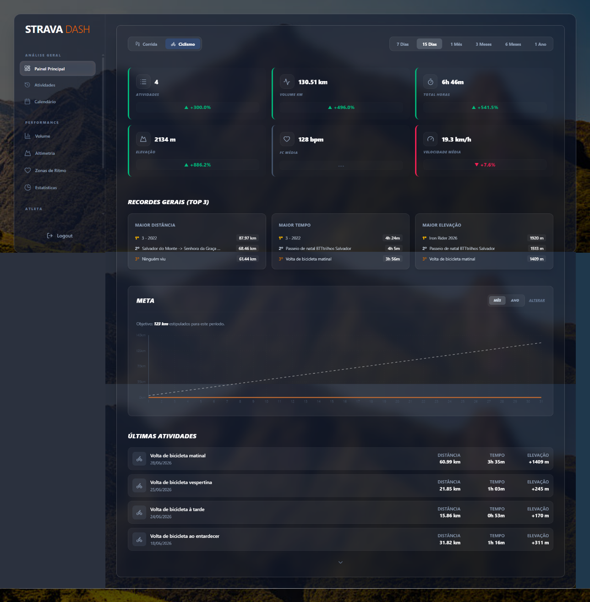

DAVIDE CERQUEIRA
|
Web Developer licenciado em Comunicação e Multimédia, apaixonado apaixonado pelo mundo digital e pelo desenvolvimento de soluções web. Construo experiência entre projetos académicos e profissionais, sempre com vontade de aprender mais e evoluir, pronto para o próximo desafio.
PROJETO EM DESTAQUE
STRAVA DASH
Dashboard de análise de desempenho desportivo que consome a API oficial do Strava via OAuth2. Apresenta gráficos de performance, mapas de rotas percorridas, calendário de treinos e um servidor de autenticação próprio.
VER PROJETO COMPLETO
4
Projetos
12+
Tecnologias
3
Anos de Formação
Porto, PT